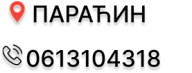

ЗОРАН ВЕКИЋ
Рођен у Кикинди на Северу Баната. Завршио Техничку школу "Михајло Пупин" у Кикинди.
Од малена проводио вријеме у Цркви. Прабака га је водила тамо из разлога јер је радила у Цркви и није имао ко да га чува - јер су му родитељи радили како би прехранили Зорана и његовог млађег брата. Наш Зоран је поред баке јако заволео Цркву и Светиње и тако наставио тај пут.
Почетком средње школе почео је да ради како не би био на терету својој мајци која се мучила да га ишколује и изведе на прави пут.
Зоран се осамосталио са непуних 20 година и тако креће његова борба јер воли своју Отаџбину. Жели да остави неко добро дело иза себе. Креће се по Протестима против овог режима у нади да ће нешто допринети,али увек нешто узалудно.
Ево већ четврта година како је покренуо "Српска Тробојка"" у нади да пробуди Народ како би се ослободили ове диктатуре.
Учествовао у доста Протеста и неких Блокада, ове године покренуо групу грађана Срцем за Сомбор и тако делује,али дошло је до тога да се покрене нешто по целој Србији и тако је са својим пријатељима покренуо "Јачи од Система"!
За њега је Косово и Метохија Срце и Душа Србије!
Предаја му није Опција!
Породица му је на Првом Месту!
Воли свој Народ!
Образ и Част су му пречи од свега!
Живи и Ради у Сомбору већ дуго година и осећа се као да је тамо и рођен. Ожењен је срећно крајем 2022.године. Добија ћерку 2024. почетком априла добија још једну ћерку,бори се и не зависи ни од кога. Циљ му је Слобода коју су нам Преци оставили.
Позива вас да нам се прикључите!
КАКО РАДИЛИ ТАКО НАМ БОГ ПОМОГАО!
ДРАГОЉУБ КРСТИЋ
Рођен 1979. и одрастао у Београду.Отац двоје деце. Говори руски,словачки и енглески.
Од 17. године бави се грађанским активизмом и хуманитарним радом.
Учествовао је у десетинама хуманитарних акција. Учествовао је у десетинама протеста. Организовао је преко 10 протеста на територији Београда за побољшање услова живота грађана Гроцке. Предлагач неколико закона везано за права деце и сузбијање породичног насиља над малолетницима.
Директни је учесник у рату 1998/1999. као припадник Граничних јединица војске Србије као дресер паса за специјалне намене.
Такмичар бициклистичког клуба Партизан.
Бави се планинарством и бициклизмом.
Оснивач УГ Наша Калуђерица од 2010. године које се бори против сваке власти која ради против интереса грађана и којој је корупција основ постојања.
Залаже се да се похапсе сви актери садашње власти, да се грађанима повећа стандард одговорнијим трошењем новца уместо садашње крађе.Да се странке саме финансирају уместо из буџета града. Да се посланицима смање плате и да се тај новац преусмери сиромашним породицама.
ИВАН ЂОРЂЕВИЋ
Иван Ђорђевић је рођен у Пожаревцу, а сада станује у Костолцу. Основно и средње образовање завршио је у Костолцу. Ради на површинском копу као багериста. Породичан је и амбициозан човек, борац за правду, поштен и посвећен својој породици.
У биографији Ивана Ђорђевића посебно се издваја његова активност као један од људи који је почео са прикупљањем потписа петиције за подизање споменика покојном Генералу Божидару Делићу на Калемегдану у Београду.
Такође, Иван је покретач многих хуманитарних акција на територији Костолца и Пожаревца, показујући тиме своју љубав према Србији и њеном народу.
Иван је покретач и петиције за подизање споменика суграђанину Предрагу Игњатовићу, који је страдао у НАТО бомбардовању 1999. године. Он се труди да сваки учесник у ратовима деведесетих година добије спомен-обележја. Искрени је борац за правду и спас мајке Србије.
Иван упућује позив својим суграђанима да се прикључе изабран је за представника Јачи од Система Костолац
ЈЕЛЕНА ПЕТРОВИЋ
Рођена у Београду,основну и средњу школу завршила у Београду. Живим у Батајници,општина Земун. Поседујем знање руског и енглеског језика,основни ниво знања.Радила сам као промотер козметичких производа на Сајму козметике у Београду.
Хумана,родољубива, породична, љубав према природи и фотографији, путовањима, борац за екологију и заштиту животне средине. Укључила сам се у грађански активизам због решавања проблема и разговора са обичним људима(упознавање нових људи).Решена сам да дам свој допринос грађењем праведнијег и уређенијег друштва.
Јелена Петровић наша представница одбора Јачи од Система Земун,овим путем позива своје суграђане да нам се прикључе

ЗЛАТКО ЂОРЂЕВИЋ
Рођен 1970.год. у Пожаревцу, где и сада живи.Основно образовање завршио у Пожаревцу, а средње у Бродо машинској школи у Београду. Војску служио у Пљевљима '88/'89. год. Потиче из радничке породице. И сам као радник засновао радни однос са 21.год, давне 1991. на бушотинама у тада ЈП-НАФТИ.Засновао породицу из које имам ћерку и сина.
Из ране младости сам био бунтовник и противник власти.Сагледавши све власти и водеће политичке структуре у мом родном граду од 90-тих ни једна није била у интересу грађана и сељака,већ су се само бавиле личним интересима. Од 2024. се налазим у инвалидској пензији и спреман сам да са обичним људима донесем бољитак мом родном граду Пожаревцу јер то свакако заслужује.
Златко је изабран за представника Јачи од Система Пожаревац где позива своје суграђане да се прикључе да заједно дођу до промена у Пожаревцу.
МАРИЈА СЛАВКОВИЋ

Рођена у Смедеревској Паланци. Основну и средњу школу такође завршила у Смед. Паланци. Живим у Параћину - самохрана мајка детета од 13 година. Поседујем основни ниво енглеског језика. Тренутно радим као помоћни радник у хотелу.
Хуманиста борац за животиње. Укључила сам се овде због решавања проблема обичних људи и разговора са њима. Чврсто решена да се борим за боље сутра своје деце и свих нас.
Марија Славковић представница Народног Покрета Јачи од Система Параћин и овим путем вас позивам да се укључите и дате свој допринос
НИКОЛА МИЛИЋЕВИЋ
Рођен сам и одрастао у Шапцу од 1974.године где сам завршио основну и средњу грађевинску школу. Отац ми је био професор физичког васпитања,а мајка зубни техничар. Уз оца сам заволео спорт и истицао се у њему па сам тренирао рукомет у чувеном Пк Металопластика,као и пливање и одбојку. На одслужењу војног рока одлазим 1993.године а деведесете су биле веома тешке и ратне године нашег окружења, године немаштине и пропадања. Од 1994.године почињем студије факултета физичике културе које завршавам и постајем професор физичког васпитања, а радио сам и као одбојкашки тренер и судија. Од 2002.године радим у просвети сада запослен у једној основној школи већ 23.године, а већ после неколико година рада увиђамо да је стање у просвети веома лоше.
Године 2006. венчавам се и живим у браку са својом супругом Миленом која је професор енглеског језика и са којом имам једну ћерку. Напоменуо бих да сам веома тежак период живота од 1990.године када смо као народ гледали ратове и распад земље у којој смо живели и од тада сам и почео да пратим политичку ситуацију и борио се против неправде која нас је као народ задесила.
У студентском протесту 1996/97 године учествовао сам активно на свим тадашњим акцијама као и другим политичким скуповима. На моју жалост током студија доживео сам спортску повреду колена и због тога имао две операције које су ми у почетку олакшале кретање али касније стање ми се погоршава па сам добио статус особе са инвалидитетом и од 2018.године ходам уз помоћ штака. Политичка ситуација под режимом Слободана Милошевића кулминирала је 5.октобра 2000.године,када је народ Србије организовао револуцију,а ја сам био учесник тога дана и са поносом то истичем. С обзиром да се после тог доба припадање српског народа наставило свим другим режимима самим тим припадање није заобишло ни просвету у којој се сад налазим. У школи у којој радим увидео сам разне криминалне радње, због којих сам дигао глас и као последицу против мене је покренут дисциплински поступак преко анонимне пријаве, а судски поступак је и даље у току и налази се пред Уставним судом Србије пуних девет година.
Од 2023 године члан сам Независног синдиката просветних радника Србије а активан сам и у борби против режима Александра Вучића који жели да у Србији доведе разне рударске корпорације,а оне ће својим деловањем уништити животну средину у којој се налазимо и под којем леже кости наших предака. Као прву акцију у одбрани те еколошке катастрофе иако имам здравствене тегобе у кретању делимично сам пешачио у организованом маршу од Београда до Лознице преко Цера,пред Видовдан 2024.године,и тиме дао добар пример да се као народ никада не смемо предати у нападима разних непријатеља који нападају народ у целом свету зарад сопствених интереса. Одлучујем да се прикључим Народном Покрету Јачи од Система и дам свој допринос
Никола Милићевић представник Јачи од Система Шабац овим путем позива своје суграђане да подрже народну опцију.
БИЉАНА ГЕЛИЋ
Биљана Гелић, родом из Босне, одрасла у Мошорину, а живим у Новом Саду. Основну школу завршила у Мошорину, а средњу и вишу у Новом Саду.
Већи део свог радног века сам се бавила угоститељством, предузетник. На крају сам због намета система затворила бизнис.
Сад се бавим као и већина у Србији поштеног света, свим и свачим .
Јако дуго припадам различитим групама и организацијама, што хуманитарним, сто еколошким, што грађанским.
Иза мене су различите акције и борбе али, некако, више волим да моја дела говоре уместо мене.
Једино што могу рећи јесте да ћу дати све од себе да отерамо ово зло!
Биљана Гелић је приступила Народном Покрету Јачи од Система како би дала свој допринос за боље сутра те вас овим путем позива да нам се прикључите како би се изборили са овим злом.
МАРКО ЈОВАНОВИЋ
Зовем се Марко Јовановић. Рођен сам 1988. у граду Ваљеву. Основну и средњу школу сам завршио у Ваљеву - трговински техничар, IV степен стручне спреме . Отац троје деце, сина Виктора (10 година), кћи Дуње (6 година) и Огњена. Родољуб и патриота. Волим и поштујем своју децу, супругу и комад земље који нас све хлебом храни . Радио сам у трговинском ланцу 3 године. Након тога сам се бавио производњом намештаја за једну локалну фирму. Услед короне сам са породицом отишао на село где и сад живимо. Бавимо се сточарством и имамо око 150 оваца. Радимо близу 10 х земље и овце водимо сваке године на ваљевске планине на сезонску испашу коју прете неки тамо да ће нам одузeти због некаквог литија. Дружељубиви и добри смо домаћини, волимо да угостимо што је типично за наш менталитет - немамо непријатеље, нисмо ни са ким у завади. Стављамо се на располагање јер зло које је снашло наш народ мора да се истреби јер не дамо им нашу реку, ливаду и шуму. Ништа од тога није ничија прчија и није за ударце врећа.
Марко Јовановић Народни Покрет Јачи од Система Ваљево
ТОМИСЛАВ ПОПОВИЋ
Рођен у Пазару, живи у Рашкој. Студира у Београду правни факултет - у року даје испите. Завршио гимназију са одличним успехом. Говори енглески и француски. Активни учесник у протестима и родољубивим акцијама,Томислав Поповић је одлучио да се прикључи народном покрету јачи од система и да свој допринос како не би после студија морао да оде из своје земље.
Овим путем позива своје суграђане као и своје колеге са факултета да подрже једину праву опцију.
ЊЕГОШ АНДРИЋ
Рођен у Новом Пазару. Тренутно живи у Рашкој. Основну и средњу школу похађао у Рашкој - угоститељска школа, одсек: кувар. Тренутно радно место - електричар са радом на висини. Рођен 2002. године добровољно одслужио војни рок. Његош је борац за слободу, патриота и родољуб. На првом месту му је домовина и мајка Србија. Искрени борац за правду и верује да може доћи до промена са народном опцијом.
Овим путем позива грађане Рашке да му се прикључе у борби.
Његош је представник Народног Покрета Јачи од Система Рашка
ДРАГАН ГЛИГОРИЋ
Рођен у Крупњу. Основну школу и средњу трговачку завршио у Крупњу гдје и сада живим. Бавим се пољопривредом више од 30 година. Узгајем малине, а задњих 10 година и купине. Волим природу. Бавио сам се и трговином и механичким пословима. Већи део живота провео сам у природи и знам колико природа значи. Због тога желим да је сачувам и хоћу да дам свој допринос на овај начин са људима који исто мисле.
Са поштовањем Драган Глигорић представник Јачи од Система Крупањ.
СЛАВИША МАРКОВИЋ
Славиша Марковић долази из села Бастав, општина Осечина.
Пољопривредник је и возач са поруком : Боље је оставити све обавезе и укључити се у борбу - јер се боримо за будућност наше деце,
него кроз коју годину оставити посао и обавезе и отићи доктору болестан.
Здравље се не продаје.
Славиша Марковић представник Јачи од Система Осечина